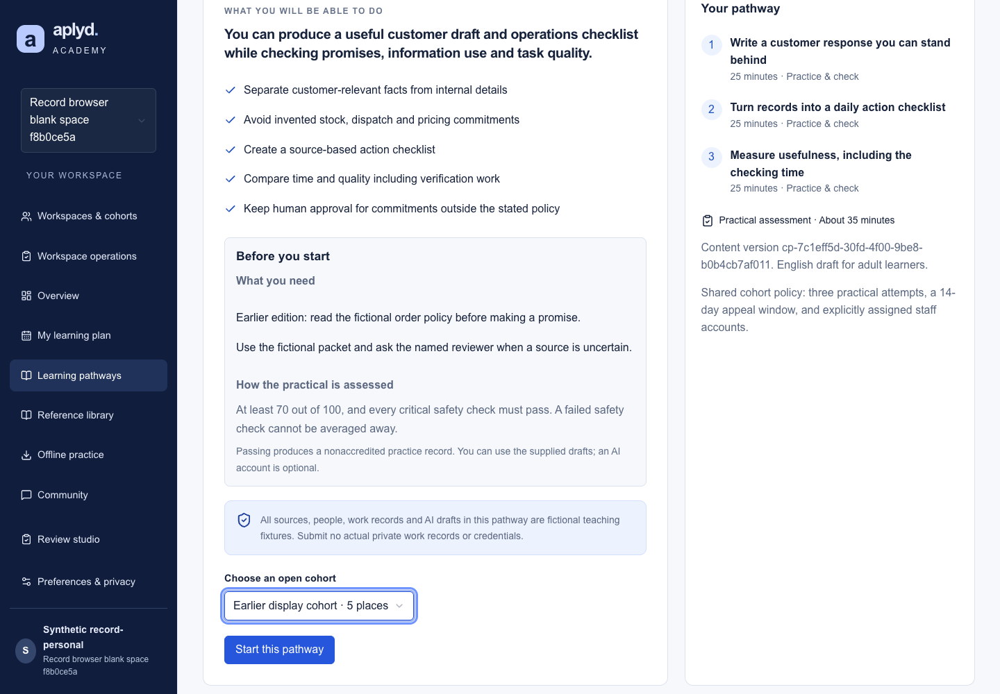
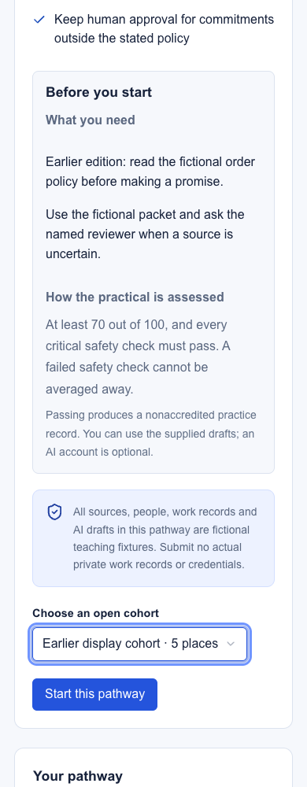
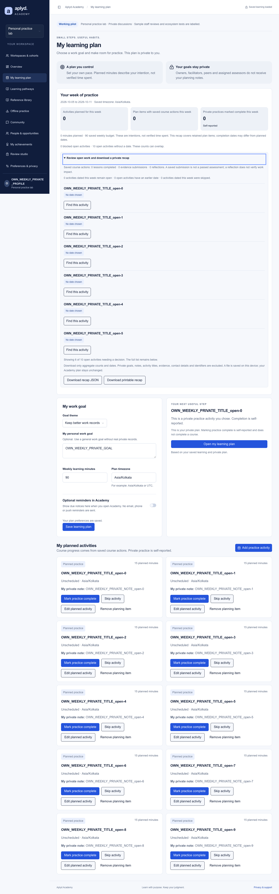
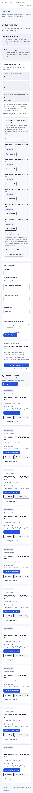
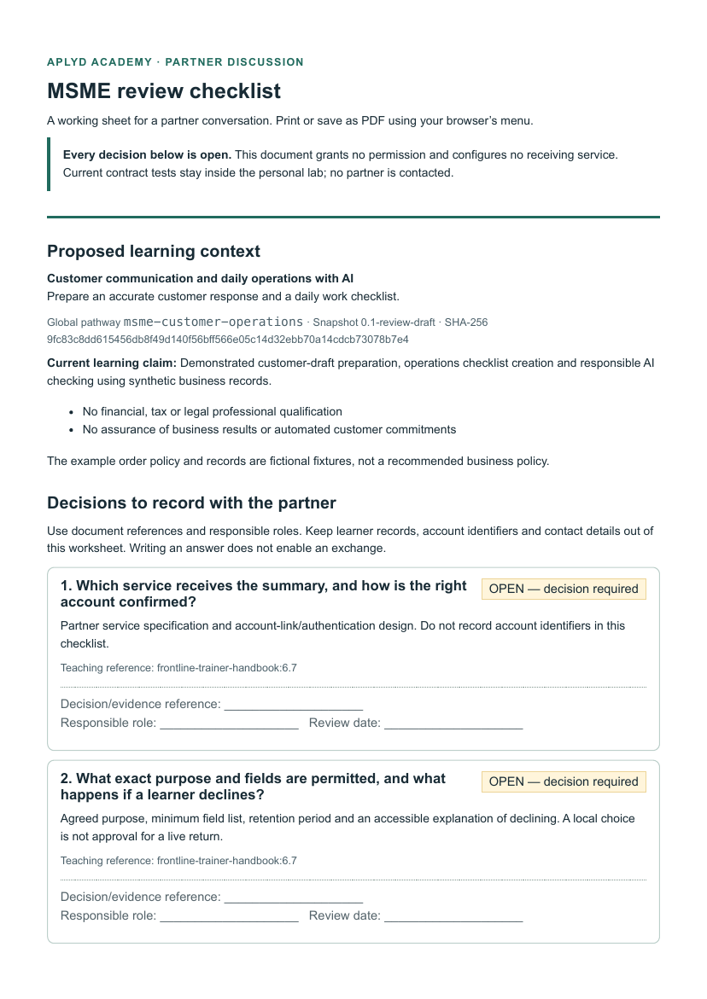

Aplyd Academy: current learning journeys
v0.14 candidate · local acceptance complete · native publication pending. See release review and test scope.
These are actual local M4 screenshots from read-only acceptance, with fictional QA data and labelled display variants. They show the implemented views alongside the functional design. They are not production participant records or field-user acceptance.
WF-M4-01 · Check the course before starting
The learner reads prerequisites and the supported passing rule from the exact displayed edition, then explicitly chooses an open shared cohort when required. Unknown content does not borrow another edition. Enrollment remains a separate action.


WF-M4-02 · Review planned work and saved actions
The weekly review separates intentions, saved course actions and self-reported practice. Optional open-work links lead to existing own activity cards. Deliberate recap downloads contain aggregate counts and dates only.


WF-M4-03 · Prepare a partner discussion
The existing personal ecosystem disclosure can download a fixed generic worksheet for Agri Saha, MSME or public service. It contains seven open decisions, current local field definitions, boundary checks and original Library references. It establishes no live exchange or approval.

Read-only local checks cover navigation, guarded downloads, keyboard use, 390/768/1440px layouts and 200% text. Hosted authentication, field usability, recognized certification, live AI and real partner acceptance remain separate work. The existing catalog-to-preview offering mismatch is recorded with source evidence: explicit cohort selection displays that chosen edition; an isolated follow-up must preserve existing pins.